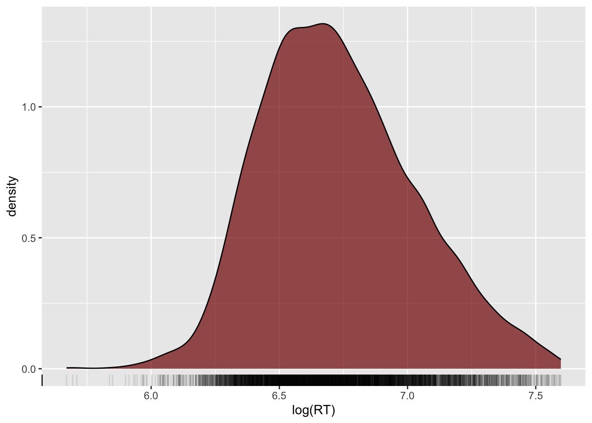

summarise(shallow, RT_mean = mean(RT))DAL tutorial - Week 6
Data transformation II
1 Summary measures
During the lecture, we have learnt two types of measures.
When you work with data, you always want to get summary measures for most of the variables in the data.
Data reports usually include summary measures. It is also important to understand which summary measure is appropriate for which type of variable.
We have covered this in the lecture, so we won’t go over it again here. Instead, you will learn how to obtain summary measures using the summarise() function from the dplyr tidyverse package.
summarise() takes at least two arguments:
The data frame to summarise.
One or more summary functions.
For example, let’s get the mean the reaction time column RT. Easy! (First attach the tidyverse and read the song2020/shallow.csv file into a variable called shallow.)
Great! The mean reaction times of the entire sample is 867.3592 ms.
You can round numbers with the round() function. For example:
num <- 867.3592
round(num)[1] 867round(num, 1)[1] 867.4round(num, 2)[1] 867.36The second argument sets the number of decimals to round to (by default, it is 0, so the number is rounded to the nearest integer).
Let’s recalculate the mean by rounding it this time.
summarise(shallow, RT_mean = round(mean(RT)))What if we want also the standard deviation? Easy: we use the sd() function. (Round the mean and SD with the round() function in your code).
# round the mean and SD
summarise(shallow, RT_mean = mean(RT), RT_sd = sd(RT))Now we know that reaction times are on average 867 ms long and have a standard deviation of about 293 ms (rounded to the nearest integer).
Let’s go all the way and also get the minimum and maximum RT values with the min() and max() functions (round all the summary measures).
summarise(
shallow,
RT_mean = mean(RT), RT_sd = sd(RT),
RT_min = ..., RT_max = ...
)Fab! When writing a data report, you could write something like this.
Reaction times are on average 867 ms long (SD = 293 ms), with values ranging from 0 to 1994 ms.
We won’t go into the details of what standard deviations are, but you can just think of them as a relative measure of how dispersed the data are around the mean: the higher the SD, the greater the dispersion around the mean, i.e. the greater the variability in the data.
When required, you can use the median() function to calculate the median, instead of the mean(). Go ahead and calculate the median reaction times in the data. Is it similar to the mean?
1.1 NAs
Most base R functions behave unexpectedly if the vector they are used on contain NA values.
NA is a special object in R, that indicates that a value is Not Available, meaning that that observation does not have a value.
For example, in the following numeric vector, there are 5 objects:
a <- c(3, 5, 3, NA, 4)Four are numbers and one is NA.
If you calculate the mean of a with mean() something strange happens.
mean(a)[1] NAThe functions returns NA.
This is because by default when just one value in the vector is NA then operations on the vector will return NA.
mean(a)[1] NAsum(a)[1] NAsd(a)[1] NAIf you want to discard the NA values when operating on a vector that contains them, you have to set the na.rm (for “NA remove”) argument to TRUE.
mean(a, na.rm = TRUE)[1] 3.75sum(a, na.rm = TRUE)[1] 15sd(a, na.rm = TRUE)[1] 0.9574271Note that R has a mode() function, but alas this is not the statistical mode. To get the mode of a categorical variable you can just count the occurrences of the values of that variable and the value that occurs the most is the mode!
You will learn how to count occurrences below. But first, let’s see what density plots are!
2 Density plots
Reaction times is a numeric continuous variable so density plots are appropriate.
To plot the probability density of a continuous variable, you can use the density geometry.
shallow |>
ggplot(aes(x = RT)) +
geom_density()
The black solid curve in the plot indicates the density of the data (the y-axis) along the values of RT (the x-axis).
The higher the point of the curve is on the y-axis (i.e. the higher the density), the more data there is at the corresponding x-axis value.
For example, the highest point in the curve is at around 750 ms (the white vertical line between 500 and 1000 is 750).
This means that around 750 ms there are many observations.
On the other hand, if you look at the curve to the left of 500 ms RT and above 1500 ms RT, the height of the points forming the curve are much lower and in some cases they even go to 0 density (y-axis).
Note that to create a density plot, you only need to specify the x-axis. The y-axis is the probability density, which is automatically calculated (a bit like counts in bar charts, remember?).
2.1 Make things cosy with a rug
The density line shows you a smoothed representation of the data distribution over RT values, but you might also want to see the raw data represented on the xsxis.
You can do so by adding the rug geometry. Go ahead and add a rug…
shallow |>
ggplot(aes(RT)) +
geom_density() +
...You should get the following:

Nice huh? You can also change the opacity of the ticks of the rug to have a better sense of how many ticks there are at certain values on the x-axis.
Opacity of geometries can be adjusted with the alpha argument: 0 means completely transparent and 1 means completely opaque.
Let’s set the alpha of the rug geometry to 0.1.

Can you see how the blackest parts of the rug correspond to the higher parts of the density curve?
Keep reading to learn how to count occurrences.
3 Count occurrences
Often, you need to count occurrences in the data frame based on the values of specific columns.
For example, let’s count the number of correct and incorrect trials in the shallow data frame.
The column ACC tells us whether a trial is incorrect 0 or correct 1. (We will see how this way of coding binary variables, with 0s and 1s is not an ideal, although very common way, of coding binary variables. For now let’s keep it as is.)
We can use the count() function from the dplyr tidyverse package to count the number of occurrences for each value of a specific column.
The function count() takes the name of a tibble and the name of the column you want to count values in.
count(shallow, ACC)# You can also write that as
# shallow |> count(ACC)How many correct trials are there in the shallow tibble? And how many incorrect trials?
Note that you can add multiple column names, separated by commas, to get counts for the combinations of values of each column.
Try to get counts of the combination of ACC and Group (L1 vs L2 participants). Replace ... with the right code.
count(shallow, ...)This is the output:
Are there differences in accuracy between the L1 and L2 group? It’s difficult to say just by looking at those numbers, because the total number of trials for L1 and L2 participants is different.
There are more L2 trials than L1 trials in the data set.
When the total number of observations is not the same in the groups we are trying to compare, we can calculate the proportion instead of the raw count.
This should ring a bell. Do you remember position = "fill" in bar charts? This is based on the same reasoning.
We can calculate the proportion of correct and incorrect trials using a chain of functions.
shallow |>
add_count(Group, name = "tot") |>
count(Group, ACC, tot) |>
mutate(
prop = round(n / tot, 2)
)To learn what each line does, you can split the chain in multiple steps and inspect each step.
shallow_tot <- shallow |>
add_count(Group, name = "tot")
shallow_count <- shallow_tot |>
count(Group, ACC, tot)
shallow_prop <- shallow_count |>
mutate(
# round proportion to 2 decimals.
prop = round(n / tot, 2)
)Now check shallow_tot, shallow_count and shallow_prop.
Based on the proportion of correct trials in the L1 and L2 group, are there substantial differences in how the two groups performed? Or are they similar? If not, who was better?
4 Grouping data
Sometimes you might want to get summary measures for one column depending on different values of another column.
You can use the group_by() function from the dplyr tidyverse package, together with summarise() to achieve that. Let’s see how it works.
group_by(shallow, Group) |>
summarise(
RT_mean = round(mean(RT)),
RT_sd = round(sd(RT))
)The group_by() function takes at least two arguments:
The name of the tibble to group.
The name of the columns to group the tibble by, separated by commas.
Here we are grouping shallow by Group.
In fact, you can even use a pipe for the tibble of group_by() as we have done for other functions, like so:
shallow |>
group_by(Group) |>
summarise(
RT_mean = round(mean(RT)),
RT_sd = round(sd(RT))
)5 Log-transformation
Look again at the density plot of reaction times. Can you see the long tail of the density line on the right side of it?
Reaction times are numeric and continuous, but can only be positive! Because of this, usually the distribution of reaction times looks like the one in plot: a big lump on the left side and a long tail to the right.
It is common practice to transform variables that can only tale positive values to reduce the asymmetry in the distribution.
A common transformation is to calculate the logarithm of the values. You can calculate the logarithm (or log) of a number in R using the log() function. Calculating the logs of a variable is known as a log-transformation.
Let’s log-transform the reaction times and plot them.
shallow |>
ggplot(aes(x = log(RT))) +
geom_density(fill = "#800000", alpha = 0.7) +
geom_rug(alpha = 0.1)